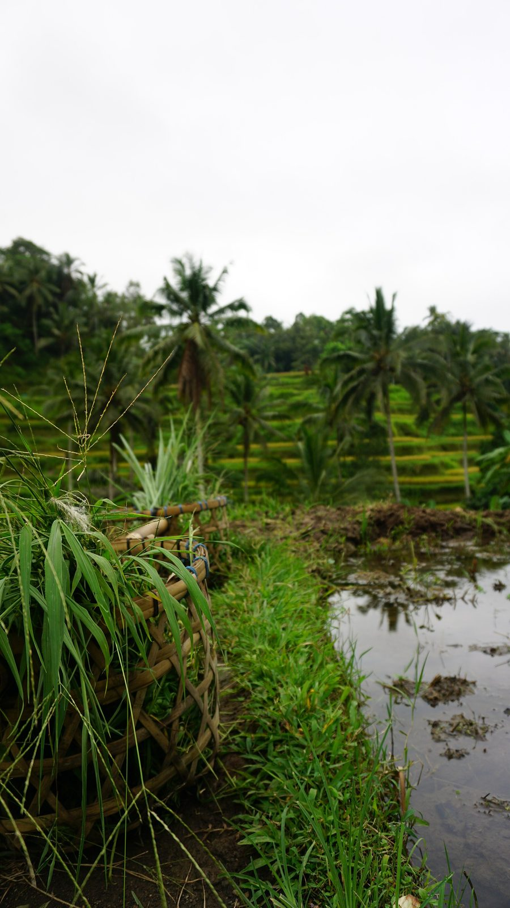
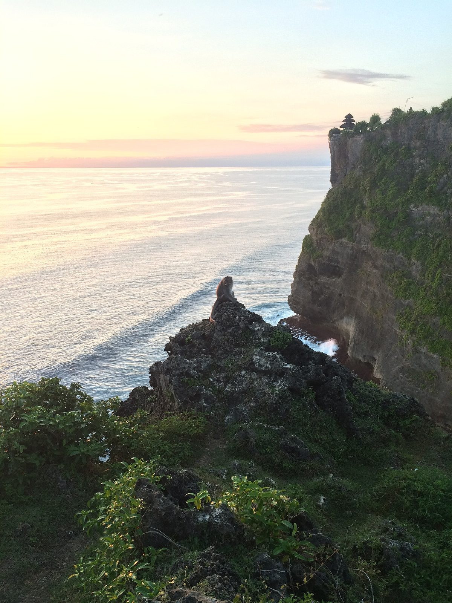
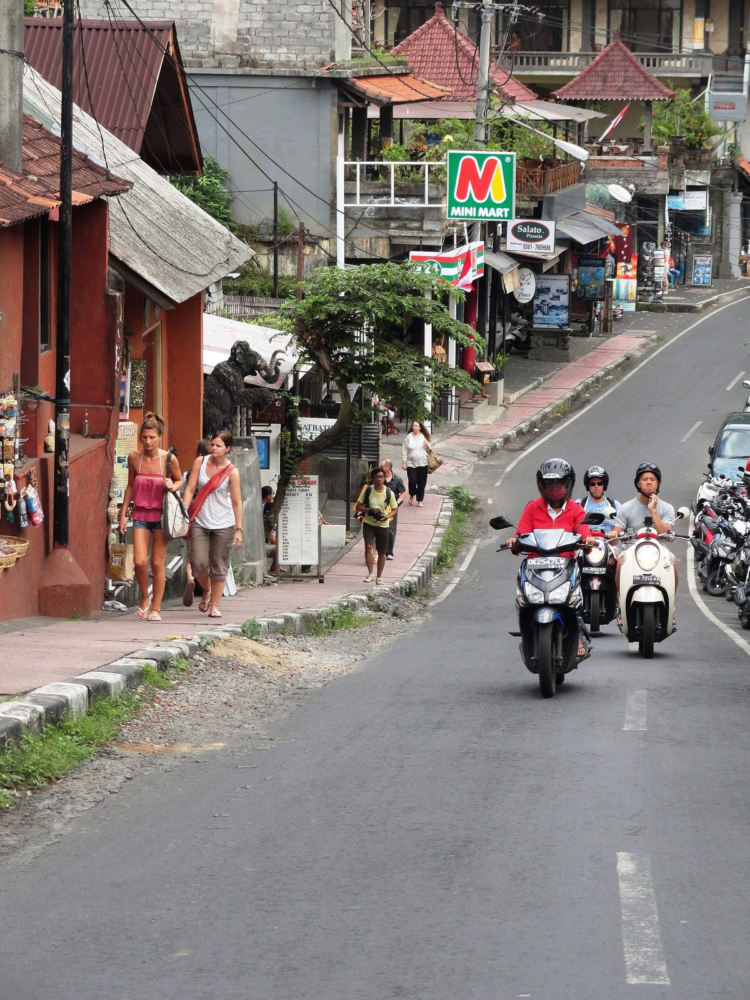

Arrive, Ubud
Jungle villa with a private pool, easy first evening.
The most varied destination on this list — jungle villas, rice terrace views, temple culture, waterfalls, and beach clubs all within a couple hours of each other. Best value-to-experience ratio here by a wide margin. 8 days on the ground, about 9–10 door-to-door.


Shoulder: June, September (dry season, less crowded than the July–August peak).
Peak: July–August (dry season peak, most crowded and priciest).
Handy timing: Cathay Pacific's Seattle–Hong Kong seasonal nonstop runs mid-September through late October, lining up neatly with this window.
A private-pool villa in Ubud (~$300/night) plus 4 nights at Alila Villas Uluwatu (~$900/night) runs lodging to about $4,800; food and activities are genuinely cheap here, adding maybe $1,200 more. Total lands around $6,000 — comfortably the best value on this list, even before considering that going all-in on Four Seasons Sayan + Bulgari (~$2,500/night) would blow well past $7,500 instead.
This is Bali's most comfortable, driest stretch of the year.
Similarly humid but slightly warmer nights than inland Ubud.
Jungle villa with a private pool, easy first evening.

Tegalalang rice terraces, Sacred Monkey Forest, waterfall hikes (Tegenungan or Tibumana).
Traditional Balinese cooking class, temple visit — Tirta Empul for a water purification ritual.
Spa, slow morning, more of the rice terraces or a quieter temple.
Beach clubs, settle in.
Uluwatu Temple at sunset, surf watching.
Spa day, seafood dinner on the sand.
Fly home.
Excellent value even at the luxury tier — this is what makes Bali the value pick on this list.
Ubud, jungle/river setting, riverwalk to the Campuhan Ridge.
All-pool-villa clifftop resort, contemporary Balinese design — the coastal splurge.